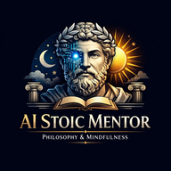

AI Наставник
Цитата дня
Выбрать наставника
Марк Аврелий
Эпиктет
Сенека
Зенон
Спросить наставника
Слова наставника
Практика дня
Вечерняя рефлексия
Вопрос для самоанализа
Практика стоицизма
0
дней подряд
0
всего практик
0
очков
Эта неделя
Задачи на сегодня
Архив
Архив пуст
Сохранённые беседы появятся здесь
Персонализация
Ученик Стои
AI Stoic Mentor · v1.0.0
Язык / Language
Активный наставник
Марк Аврелий
Уведомления
Утренняя цитата
Вечерняя рефлексия
Данные
AI Stoic Mentor
v1.0.0 · Philosophy & Mindfulness
«Memento mori. Amor fati.»
AI Психолог
Онлайн · готова выслушать